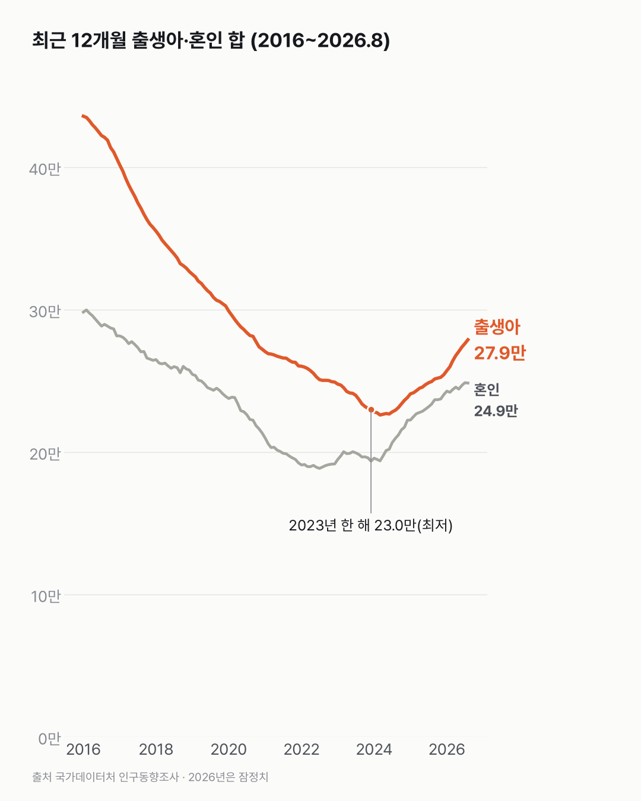
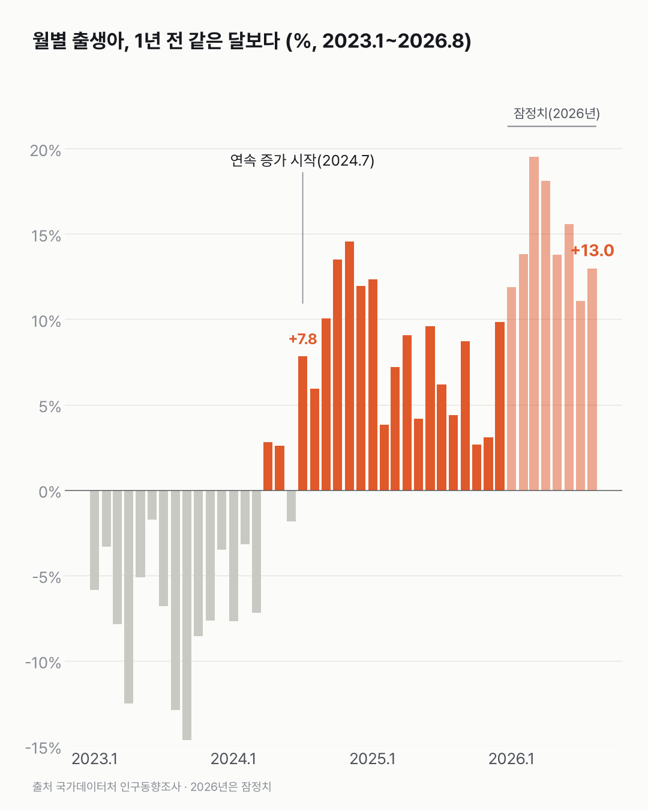

출생아, 1년 전보다 많은 달이 2년 넘게 이어지고 있어요
아기는 2년 넘게 1년 전보다 많이 태어나고 있어요. 바닥에서는 올라왔고, 2015년과는 아직 거리가 있어요.

3줄 요약
- 출생아는 2024년 7월부터 2026년 8월까지 26개월 연속 1년 전보다 늘었어요.
- 한 해 출생아가 가장 적었던 건 2023년 23.0만 명이에요. 2026년 8월까지 최근 12개월 합은 27.9만 명이에요.
- 2015년(43.8만 명)에 대면 최근 1년 출생아는 64% 수준이에요.
혼인 건수가 가장 적었던 해는 2022년, 19.2만 건이었어요. 그 뒤로 혼인은 늘어 2025년엔 24.0만 건이 됐어요. 출생아는 한 해 늦게 바닥을 지났어요.
연간 출생아는 2023년 23.0만 명에서 2024년 23.8만, 2025년 25.4만 명이 됐어요. 2026년 8월엔 23,703명이 태어나 1년 전보다 13.0% 많았어요.
26개월 연속. 이건 다시 세어 봤어요. 2024년 7월부터 한 달도 빠지지 않고 1년 전 같은 달보다 많더라고요.
올해 1~8월 출생아는 19.4만 명으로 전년 같은 기간(16.9만 명)보다 많아요. 3월(+19.5%)과 4월(+18.1%)이 특히 컸어요.

바닥에서 올라온 거리와 2015년까지 남은 거리를 한 그림에 놓으면, 남은 쪽이 아직 더 길어요. 이 오름세가 몇 달 더 이어질지, 매달 나오는 출생 통계를 계속 보게 될 것 같아요.
이 숫자는 어디서 왔나요
출처
기준일 2015년 1월 ~ 2026년 8월이에요.
국가데이터처인구동향조사
- 월·분기·연간 인구동향(출생, 사망, 혼인, 이혼)KOSIS DT_1B8000G원본 보기
전국 월별 출생아 수·혼인 건수, 2015.1~2026.8
어떻게 셌나요
- 출생은 아이가 태어난 달, 혼인은 신고한 달로 세요. 혼인 건수에는 국외 혼인도 들어가요.
- 달마다 출생아 수는 계절에 따라 크게 오르내려요. 그래서 전년 같은 달과 견주거나 최근 12개월을 더해서 봤어요.
- '연속 증가'는 전년 같은 달보다 출생아가 많은 달이 몇 달째 이어졌는지예요.
- 2026년 값은 잠정치예요. 나중에 확정되면서 바뀔 수 있는 임시 숫자예요. 출생은 다음 해 8월 말에 확정되고, 지금은 2025년까지 확정됐어요. 차트 2에서 옅은 파랑으로 표시했어요.
- 비교 기준인 전년 값도 확정되며 바뀌어서, 보도 당시 증가율과 0.2%p 안팎 다를 수 있어요.
한계 4가지
이 데이터로 말할 수 없는 것
- 잠정치라 최근 값은 바뀔 수 있어요.
- 혼인 건수는 신고 일수의 영향을 받아요. 2026년 5월 혼인 감소(−6.4%)는 노동절 공휴일 지정으로 신고 일수가 줄어든 영향이 있다고 보도됐어요.
- 혼인과 출생을 같이 그렸을 뿐, 혼인이 출생으로 이어졌다는 뜻은 아니에요. 출생 증가의 원인(혼인 증가, 30대 초반 인구, 정책 등)도 이 데이터로 가를 수 없어요.
- 출생아 수만 봐요. 합계출산율(여성 1명당)은 따로 보지 않았어요.
새 글 나오면 받아 보기
피드 리더 앱에 이 사이트 주소를 한 번 넣어 두면, 새 글이 올라올 때 앱에 떠요. 가입이나 메일 주소는 필요 없어요.
받는 법 보기
- 피드 리더 앱을 하나 골라요. 새 글을 모아 보여 주는 앱이에요. 예를 들면 Feedly나 Inoreader가 있어요. 둘 다 무료고 웹·휴대폰에서 써요.
- 앱에서 '구독 추가'(+)를 누르고 아래 주소를 붙여 넣어요.
- 끝이에요. 새 글이 올라오면 앱 목록에 떠요.
https://protofu.github.io/opendata-insight/feed.xmlFeedly를 쓴다면 여기를 눌러 바로 추가할 수도 있어요.